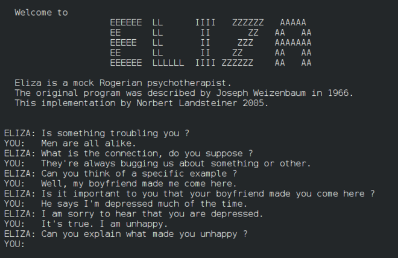

In 1950, Turing suggested a test to determine whether a computer can exhibit intelligent behaviour indistinguishable from that of a human.
An aspect of the test was an imaginary conversation between a human and a computer. Since then, computer scientists have designed software to let humans interact with a computer in natural language.
Alan Mathison Turing The father of theoretical computer science and artificial intelligence
The first such program was ELIZA (1960s).
After ELIZA, numerous programs (christened Chatbots) have been written to enable humans to converse with computers in natural language.

A conversation with ELIZA
From ELIZA to ChatGPT
Watch a short video to get to know the history of CHATBOTS!
Want to learn more about each chatbot?
Click on the sidebar navigation for further information!